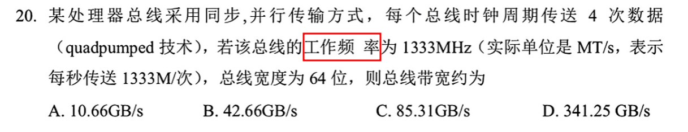

本题考查总线“工作频率”和“时钟频率”的区别。题干写的是工作频率 1333MHz，并特别说明实际单位是 MT/s，表示每秒传送 1333M 次数据，因此这里的 1333M 已经是有效传送次数，不能再额外乘以 quadpumped 的 4。

总线宽度为 64 位，即 8B，因此：
总线带宽 = 1333M × 8B ≈ 10.66GB/s。
所以答案选 A。
如果题干给出的是总线时钟频率 1333MHz，才需要再乘以每个时钟周期传送 4 次数据，此时带宽约为 1333M × 4 × 8B ≈ 42.66GB/s，对应选项 B。但本题已经把工作频率按 MT/s 给出，因此不能按这种方式计算。